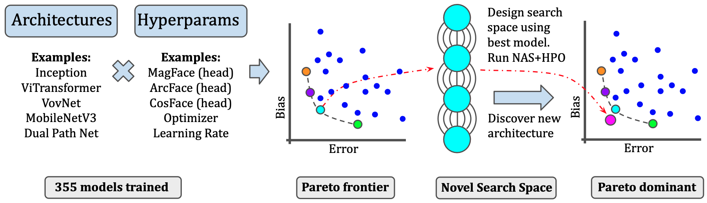

Face recognition systems are widely deployed in safety-critical applications, including law enforcement, yet they exhibit bias across a range of socio-demographic dimensions, such as gender and race. Conventional wisdom dictates that model biases arise from biased training data. As a consequence, previous works on bias mitigation largely focused on pre-processing the training data, adding penalties to prevent bias from effecting the model during training, or post-processing predictions to debias them, yet these approaches have shown limited success on hard problems such as face recognition. In our work, we discover that biases are actually inherent to neural network architectures themselves. Following this reframing, we conduct the first neural architecture search for fairness, jointly with a search for hyperparameters. Our search outputs a suite of models which Pareto-dominate all other high-performance architectures and existing bias mitigation methods in terms of accuracy and fairness, often by large margins, on the two most widely used datasets for face identification, CelebA and VGGFace2. Furthermore, these models generalize to other datasets and sensitive attributes.
This research was partially supported by the following sources: NSF CAREER Award IIS-1846237, NSF D-ISN Award \#2039862, NSF Award CCF-1852352, NIH R01 Award NLM-013039-01, NIST MSE Award \#20126334, DARPA GARD \#HR00112020007, DoD WHS Award \#HQ003420F0035, ARPA-E Award \#4334192; TAILOR, a project funded by EU Horizon 2020 research and innovation programme under GA No 952215; the German Federal Ministry of Education and Research (BMBF, grant RenormalizedFlows 01IS19077C); the Deutsche Forschungsgemeinschaft (DFG, German Research Foundation) under grant number 417962828; the European Research Council (ERC) Consolidator Grant ``Deep Learning 2.0'' (grant no.\ 101045765). Funded by the European Union. Views and opinions expressed are however those of the author(s) only and do not necessarily reflect those of the European Union or the ERC. Neither the European Union nor the ERC can be held responsible for them.